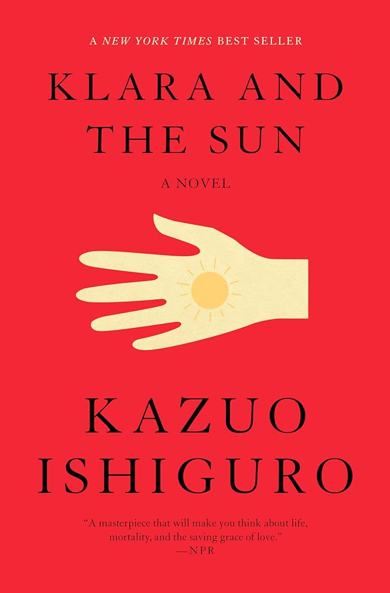
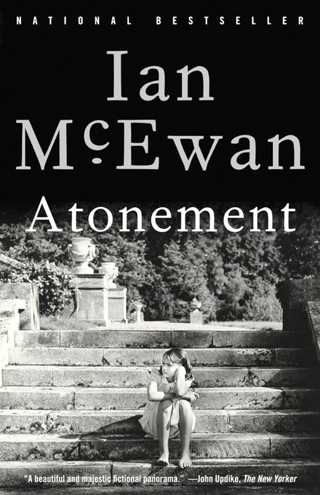

on rotation.
a few of the books i'm currently reading -- or at least trying to.
The Emperor of Gladness by Ocean Vuong
My last little gift to myself from Paris, shoutout Shakespeare and Co.! If you know me, you know about my obsession with Ocean Vuong's works. In other words, if you know me, you know how I like to break my own heart.
My last little gift to myself from Paris, shoutout Shakespeare and Co.! If you know me, you know about my obsession with Ocean Vuong's works. In other words, if you know me, you know how I like to break my own heart.
Intermezzo by Sally Rooney
After not getting over Normal People for two or even three years now, I decided it was great to put myself through the wringer again and caved when I saw a paperback copy at Daunt Books while in London. I finished this within the trainrides across the UK (how the book is meant to be read, in my opinion). Rooney does it again.
After not getting over Normal People for two or even three years now, I decided it was great to put myself through the wringer again and caved when I saw a paperback copy at Daunt Books while in London. I finished this within the trainrides across the UK (how the book is meant to be read, in my opinion). Rooney does it again.
Just Kids by Patty Smith
I won't tell you the real reason I picked this up. But for now, let's tell ourselves that it's Patti Smith, why would anyone not pick this up!
I won't tell you the real reason I picked this up. But for now, let's tell ourselves that it's Patti Smith, why would anyone not pick this up!
Tuesdays with Morrie by Mitch Albom
With the concept of tethering the lines of life and death very close to my heart and head these days, I'm finding that I have to put this book down a lot because it makes me think. And at the same time, it's such a privilege to be able to read something that makes me feel so much.
With the concept of tethering the lines of life and death very close to my heart and head these days, I'm finding that I have to put this book down a lot because it makes me think. And at the same time, it's such a privilege to be able to read something that makes me feel so much.
Kim Jiyoung, Born 1982 by Cho Nam-Joo
Given to me in parchment paper wrapping in my dorm's basement before I blew the candles out for my 21st, S told me this is a book that means a lot to her. Just a few pages in, I can already see it meaning a lot to me.
Given to me in parchment paper wrapping in my dorm's basement before I blew the candles out for my 21st, S told me this is a book that means a lot to her. Just a few pages in, I can already see it meaning a lot to me.
currents/recents.
Very rarely do I find a book I read in one go.These are ones that I'm actively reading or
just finished. Updated June 21st, 2025.
& always.
all time favourites. altered my brain chemistry for the better.

Klara and The Sun by Kazuo Ishiguro
Changed view on life and how to live. After all, who am I? Who am I without the love instilled in me? Who am I without the love I give? Who do I, then, want to be? And, well, if I hadn't known this before, this book made me realise that all I want to be is simply the embodiment of love.
Changed view on life and how to live. After all, who am I? Who am I without the love instilled in me? Who am I without the love I give? Who do I, then, want to be? And, well, if I hadn't known this before, this book made me realise that all I want to be is simply the embodiment of love.
The Bell Jar by Sylvia Plath
Bitter. Poignant. Raw. Never have I yet to see an author walk the lines of fictional non-fiction so skilfully. Stunningly impeccable, and powerfully touching, I'm so glad I exist at the same time as this.
Bitter. Poignant. Raw. Never have I yet to see an author walk the lines of fictional non-fiction so skilfully. Stunningly impeccable, and powerfully touching, I'm so glad I exist at the same time as this.

The Book Thief by Markus Zusak
One of the most nuanced reads, breaking down life, death, and catastrophe in all of its complexity. This book is not just about death; it's about death, and so much else. It's not about calamity; it's about calamity, and so much more. What this book is, is a masterpiece -- a should-be mandatory read, one worthy of a permanent spot on any bookshelf.
One of the most nuanced reads, breaking down life, death, and catastrophe in all of its complexity. This book is not just about death; it's about death, and so much else. It's not about calamity; it's about calamity, and so much more. What this book is, is a masterpiece -- a should-be mandatory read, one worthy of a permanent spot on any bookshelf.
The Ministry of Time by Kaliane Bradley
"If you ever fall in love, you’ll be a person who was in love for the rest of your life," encapsulates this beautifully. It's a powerful reminder that love, once experienced, becomes an integral part of who we are, influencing our actions and decisions long after the initial feeling has faded.
"If you ever fall in love, you’ll be a person who was in love for the rest of your life," encapsulates this beautifully. It's a powerful reminder that love, once experienced, becomes an integral part of who we are, influencing our actions and decisions long after the initial feeling has faded.

The Master and Margarita by Bulgakov, Mikhail
A drunk English major neighbour of some friends recommended this to me one night. I thought it was the alcohol talking; it may very well have been that, but the book really is good, too.
A drunk English major neighbour of some friends recommended this to me one night. I thought it was the alcohol talking; it may very well have been that, but the book really is good, too.
all time favourites.
Here are a few titles I truly and thoroughly andutterly adore. If to be loved is to be changed,
then these books have changed my very being for the
better and continue to do so with every reread.
soon to be.
books i so desperately want to find time to read.
